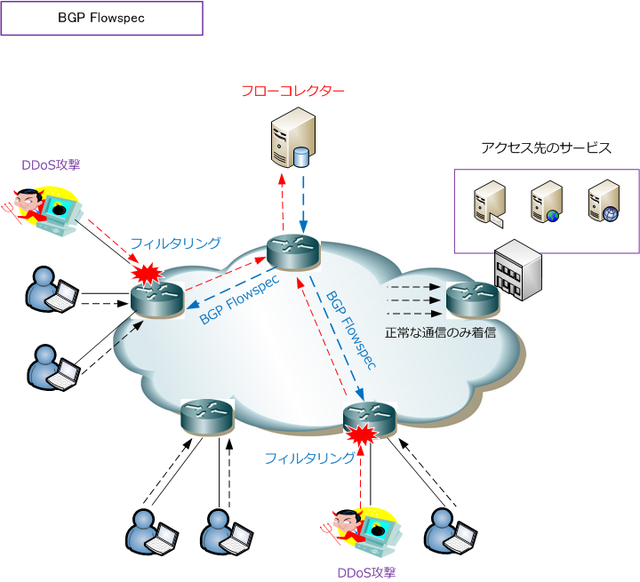

BGP Flowspec
BGP Flowspecとは
BGP Flowspecとは、トラフィックを特定するためのIPアドレス・ポート番号などLayer3/Layer4情報や 特定したトラフィックの処理方法をBGPルータにアドバタイズさせる技術のことです。DDoS攻撃を防御 するために使用される技術でもあります。
BGP Flowspecでは、DDoS攻撃の宛先IPアドレス情報だけでなく、DDoS攻撃の送信元IPアドレスや宛先 ポート番号などの情報を組み合わせてBGPルータにアドバタイズし、悪意ある通信をフィルタリングする ことができます。

DDoS攻撃対策としては、BGP Flowspec以外にも、RTBH（ Remote Triggered Black Hole Filtering ） という手法があります。RTBHは、BGP Flowspecと同様にDDoS攻撃を緩和するための技術となります。 従って、BGP FlowspecでもRTBHでもルータ等のネットワーク機器の負荷増大を防止できます。ただし RTBH機能は宛先IPベースであることから、DDoS攻撃の宛先IPアドレス宛ての通信を廃棄することになり 正当なトラフィックも遮断されてしまう可能性があります。
一方、BGP Flowspecでは、宛先IPアドレス単位だけでなく、送信元IPアドレスやポート番号の情報などに 基づいてフィルタリングできるだけでなく、悪意ある該当トラフィックの遮断（drop）や転送（redirect） 速度制限（rate-limit）など、きめ細かな通信制御が可能であり、正常な通信を廃棄する範囲が小さいです。 以上のことから、DDoS対策ではRTBH方式よりもBGP Flowspec方式を実装することが推奨されています。